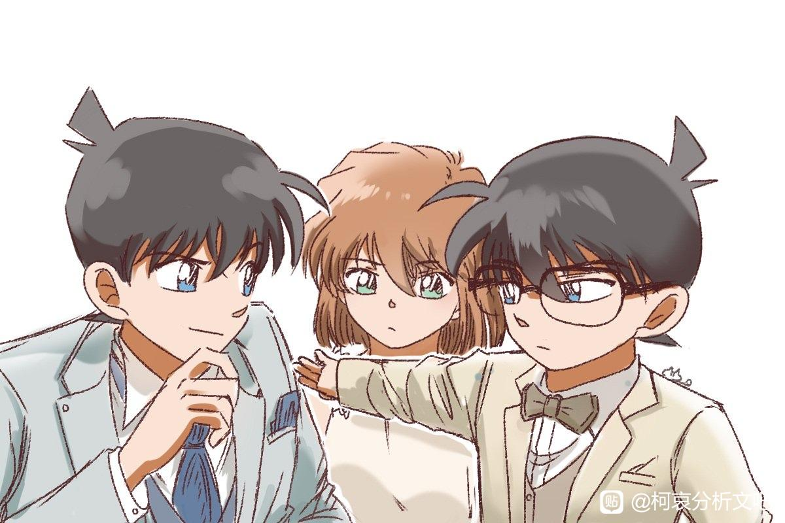

刚刚重温了一下m18，说实话一般，虽然还是让我嗑到了。（柯南的紧急联络人是哀）
在这里想聊一聊早期柯南带给我很不同的观看体验。
可能是画风和音乐所带来的，那种特别的感觉。仿佛如同黄昏笼罩，一切美丽的都即将消逝一般…
夹心饼干镇楼
在这里想聊一聊早期柯南带给我很不同的观看体验。
可能是画风和音乐所带来的，那种特别的感觉。仿佛如同黄昏笼罩，一切美丽的都即将消逝一般…
夹心饼干镇楼

一开始看柯南的时候还是小学，从小就是博爱党，直到后面转型。早期作为小学生，却能感觉到柯南变成小学生的痛苦。因为自己六年级，所以更讨厌一年级吧哈哈哈哈哈感觉和自己不是一个物种一样。
柯南早期有种意境美，不管是被迫变小，错位的痛苦。还是无法对喜欢的女生表达和不被人理解的孤独。都仿佛在下雪天，能握紧的只有电话亭里的电话线。
而这种孤独感，在哀登场后，奇妙地被缓解了。就如同哀说的，“我想如果是你的话，一定可以理解我的吧。”一样。当时感觉也许两个人和少侦就这样当小学生也不错。但是对着灰原的过去，明美姐姐，黑衣组织再会篇。这种孤独感反而被放大了。
柯南最开始就是新一（最开始的那个耀眼的 有点臭屁 不耐烦 沉迷破案甚至有点莽撞的新一），直到再会篇。
没发出来吗…
再会篇实在印象太深刻，现在都记忆犹新。当时柯南的莽撞和不顾一切的正义感使然。但是在经历灰原险些被虐杀后，当志保全身是血，身上都被打穿倒在雪地里，我想那一幕对柯南来说也绝对无法忘记。虽然动画里很快小哀就杵着拐杖出门了。但是柯南在给小哀披上外套，背着血淋淋四肢都被打中的小哀逃离火场。那种被血腥味包裹的是什么。是恐惧还是后悔，还是说庆幸呢…
也许死小在后期开大受伤早就成为了家常便饭，酒厂也变得没那么恐怖。但是前期，柯南和小哀，两个人小小的，面对着压迫感极强的黑衣组织。孤独感反而更强烈了，那种莫名其妙的悲伤一直萦绕着无法消散。
柯南面对这样的小哀，害怕连累大家，绝望到自杀的小哀。虽然后期的小哀在柯南的影响下，慢慢变得开朗活泼起来了。但是最开始那个哀言哀语，没有地方可以去的哀，何尝不是柯南的一种恐惧。柯南，难道不也在这种错乱中，这种没有地方可以去，没有人理解的孤独中迷失过吗。只是他永远用好的一面来照耀，他就是这样一个闪闪发光的人。
后面柯南这么在乎哀，完全是可以理解的。其实在满月篇，就已经被震撼到了。虽然还很小，但是这种麻醉后反锁地下室的剧情还是给幼小的我带来了冲击。而灰原奔向柯南的时候，真的看哭了。也许总有人一直都是勇敢的完美的，但是克服了恐惧，也要来救你的勇气，实在是太伟大了。
他们是真正的命运共同体，两个人有一个独自的世界。这是任何人都无法介入的。作为火批的我，只能想到鸣人和佐助。这种羁绊，早早超过了所谓的友情和爱情。他们不仅共享着秘密，孤独还有在这个表里世界里，唯独你，唯独你是清晰的。白天和黑夜泾渭分明，而你是这片迷雾笼罩的灰色地带里，永远明亮的锚点。
柯南的保护欲，甚至是控制欲，到占有欲。都太正常了。你拼命呵护的，日益血肉丰满。如同雕塑变身成活人，惨白忧郁的脸上浮现出少女的红润。成石台上就这样走下来，任何雕刻师都会立刻跪倒在地。所以柯南看见后面的小哀，其实也成就感满满吧。对嘛，这才像个孩子的表情嘛。柯南和哀的关系实在是太有意思了。宫野志保是创造了柯南的人，A药是如同禁果一般，她既作为莉莉丝又作为夏娃。而柯南才是灰原的骑士，和所谓救世主。灰原被影响得越多，救世主就越沉迷于此，越想要保护你，越抓紧你。
图有没有无水印
写得真好
这种酸涩在三个人身上都有体现。新一和兰一开始就是无法互相真正理解的人，他们可以一起去吃喝玩乐，打打闹闹。但是涉及到真正的内心，他们真的懂对方吗？即便变成了柯南，作弊一样知道了小兰的喜欢。但是一方的不安全感需要的是陪伴和爱，一方喜欢破案的是需要认可自己可以并肩作战。
如果你不去往对方灵魂最深处，你就无法和真实的人相爱。爱河的水你无法畅饮，如同在沙漠行舟，一切皆如幻影。我们现在生活中很多小情侣，也只是荷尔蒙和酒肉情侣，需要的只是符号和排解孤单。而对方内心深处的恐惧，欲望，秘密，美好，人都会抗拒。因为太过于了解一个人，会痛苦。更痛苦的是，抛开这些，你发现你无法爱上他。“驯服一个人就要冒着掉眼泪的风险”有几个疯子会真心赤裸？
而呵护这种真心，就尤其珍贵了。可能这就是所谓羁绊吧。再不幸的命运也无法将你我分离…
错位也一直是这种胃痛的来源。兰对新一的神话，是一次形象上的错位。柯南对新一这个身份的扮演与割裂，对兰的承诺和日益转移的注意力，是角色的错位。灰原这份无法抑制也无法表达的感情的错位。小哀无疑是最清晰的，她是在场最了解情况的人。但是小哀是高傲的，她有着自己的感情洁癖。只是可能低估了自己在柯南心里的地位吧哈哈哈哈
小兰还在等待，等待第一话消失在游乐场的新一。当时那种新一可能再也不会回来的预感，直到现在。而新一到柯南，经历了太多太多。柯南已经见过所谓的黑夜的里世界。他在小兰身边，却不在一个世界。他和另外一个人一起改变，相互影响，成长了。柯南越成长，就和那个新一越割裂。甚至到红修篇里扮演新一。柯南到底是如何看待新一这个角色的，现在的你，还能变回新一吗？
写得好 ！
与其说是工藤变了，不如说是A药把工藤修正为没有三角龙影响的本来模样
写的太好了
看的很舒服，楼主甚至可以在B站做一期杂谈视频
看的很舒服，楼主甚至可以在B站做一期杂谈视频
名侦探柯南其实真的不是一部子供向的动漫。他有很多恐怖到很多人的童年阴影，比如馆长和蓝色古堡事件。太多凶杀，复仇，情杀。人的感情和欲望都混合在一起。柯南能找到密室杀人的手法，动机和真凶，也就是案件的真相。可能是这一切的背后，错综复杂又波涛汹涌的感情，柯南更多的是沉默。当时那个姐姐妹妹，姐姐因为嫉妒妹妹和男友被抢的误会，杀害了妹妹伪造成自杀。柯南在最后却只是想，当初的两个人又是多么要好。画面给到的是两个人的洗漱杯，仿佛亲昵无间的两个人还在昨日。
爱欲，性欲，杀意，最强烈的时刻是一致的。人的欲望是真实的，不管是爱，关心，保护，崇拜，向往，怜悯，嫉妒，憎恨……而真实是无法逃避的。而柯南对哀，这种欲望越来越明显。虽然在满月篇后两个人像老夫老妻一样，但是小哀如有磁力一般，依然吸引着柯南的目光。爱的反面不是恨，而是无视。也许你可以短暂地欺骗自己，但你的心，你的眼睛，没办法欺骗自己。你一定会注视你最在乎的东西。就像神夏里，“火会暴露出人最在乎的东西”一样。当危险来临时，你第一个看向的就是你最紧张，最宝贵的。
2024-07-28 12:48 | Bunjul:天呐这句写太好了“爱的反面不是恨，是无视”这不就像步美对小林老师说的“放不下不就是喜欢吗”
之前圈外朋友很不理解我现在是铁血ca，她很讨厌73这种两头画的，只想看纯爱和1v1。但是其实三角关系，虽然狗血，但是更带感了哈哈哈哈哈哈哈哈。人不是天生完美的假人，与其一开始就是幸福美满的结局。我更喜欢看主角们动摇，迷茫，在成长路上追求本心的过程。作为一个过程主义者，生命在于体验，虽然内心还是希望有个好结局，但是只要过程足够精彩，我也心满意足了。当然楼主可能是被火影忍者调教惨了，早就心平气和了。
2024-07-20 14:25 | 温暖深呼吸:73笔下最明显的三角应该是高佐白吧，现在来看柯（或者是新？）兰哀在漫画里的三角竞争几乎没有2024-07-20 22:10 | NCC74656Voyage:最多漫画外被争论很多
点了2024-07-21 10:41 | 虬空:＋1

好磕
我也有这种感觉
說的太好了，
楼主说的真好，柯南对哀和兰的“关注”也是我一直很在意的点。对兰的关心（不管是情绪上的还是安全上的，也不管现在退化到怎样的程度），都是一种形式的、表面的关注，好像是他在不断地自我催眠，“我应该这么做”。而对哀则是他控制不住自己不去关心她，忍不住牵挂她、为她担心。哪个是真爱还不明显吗？如果新兰真的走到最后，那只能变成平凡人最现实、最无聊的悲喜，两个人共处一生，却不曾认识对方的真面目；而柯哀则是命运的结合，相知的瞬间灵魂都将震颤不已。那样的爱是理想的，也是应当被歌颂的。